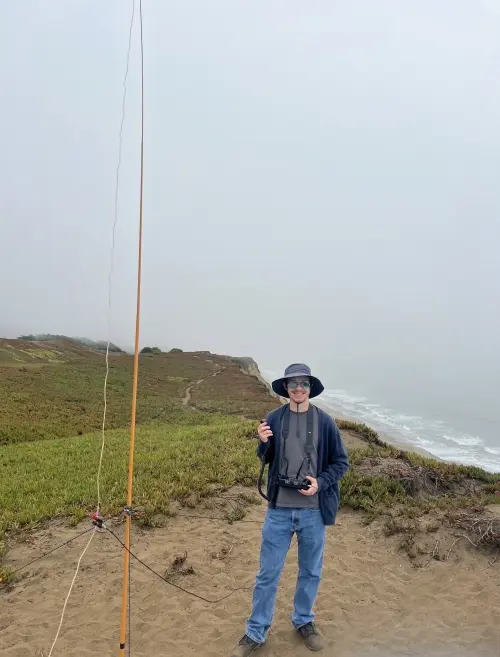
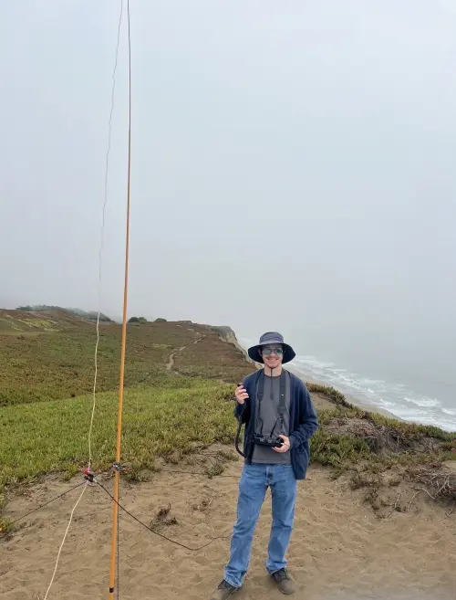

K6BCW Eli Hickox
Formerly known as KO6BCW (September 2023 - June 2024).
My interests with amateur radio include:
- QRP
- Contests
- Receiving weather transmissions from satellites
- Checking into nets
- CQing around my area seeing who I can contact
Ham Radio Blog
I have a very basic UHF/VHF setup with a few HTs.
I like to go to local parks and hills to see who I can contact.
Lately I have also been dabbling in HF so you might find me on 10m SSB or FT8. I have constructed a speaker wire dipole and it works really well on 10m. I've managed to make DX contacts with only 5-10 watts. My goal is to contact as many states and countries with this basic setup.s
I'm active on the WIN System Insomniac Trivia Net.
 

QSL:
I prefer LoTW, however I also have QRZ.com and e-QSL.
Contests I have participated in:
- 2023 ARRL September VHF Contest (Single Operator, Portable, Analog Only)
- 2024 ARRL January VHF Contest (Single Operator, Portable, Analog Only)
- 2024 ARRL International Digital Contest (Single Operator, One Radio (SO1R), QRP)
- 2024 ARRL June VHF Contest (Single Operator, Portable, Analog Only)
- 2024 All Asia DX Contest - Phone (Single Operator, One Band 10m)